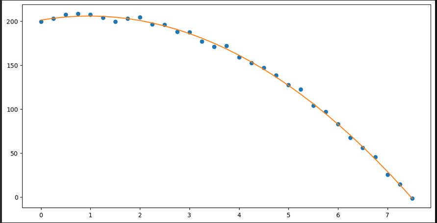
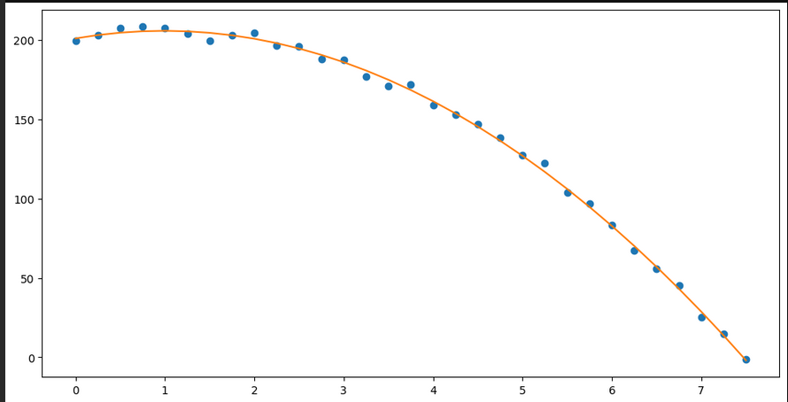

PS 9 -- Least squares and curve-fitting
Mass estimation
Suppose you are assembling components for a piece of heavy machinery. The final product involves 5 components,a,b,c,d, ande. You require estimates for the total mass of each of the components.You have take measurements of the mass of groups of the components:
mass_estimates = {('a', 'b', 'c'): 551.03, ('a', 'b', 'd'): 353.19, ('a', 'b', 'e'): 574.36, ('a', 'c', 'd'): 506.1, ('a', 'c', 'e'): 724.92, ('a', 'd', 'e'): 531.9, ('b', 'c', 'd'): 478.21, ('b', 'c', 'e'): 701.98, ('b', 'd', 'e'): 504.75, ('c', 'd', 'e'): 653.07 }For example, the equality
mass_estimates[('a','b','c')] == 551.03means that the sum of the masses of components
a,b, andcis551.03.Let’s write
ma,mb,mc,md,mefor the masses of the components.The estimates amount to linear equations in the variables
ma,mb, … e.g. we havema + mb + mc == 551.03 ma + mb + md == 353.19 ma + mb + me == 576.36 # ... etc ...Write
b = array([551.03, 353.19, 574.36, 506.1, 724.92, 531.9, 478.21, 701.98, 504.75, 653.07])Find an estimate for the vector
x = array([ ma, mb, mc, md, me ])which is the least squares solution to the equation
M @ x = bPut another way, find the vector
xas above such that the length of the vectorb - M @ xis minimized.
We begin with
import numpy as np import numpy.linalg as la mass_estimates = {('a', 'b', 'c'): 551.03, ('a', 'b', 'd'): 353.19, ('a', 'b', 'e'): 574.36, ('a', 'c', 'd'): 506.1, ('a', 'c', 'e'): 724.92, ('a', 'd', 'e'): 531.9, ('b', 'c', 'd'): 478.21, ('b', 'c', 'e'): 701.98, ('b', 'd', 'e'): 504.75, ('c', 'd', 'e'): 653.07 } b = np.array([551.03, 353.19, 574.36, 506.1, 724.92, 531.9, 478.21, 701.98, 504.75, 653.07])The first task is to produce the matrix
M.def sbv(i,n): # return the ith standard basis vector of length n return np.array([1 if j == i else 0 for j in range(n)]) def sbv_list(elem,ls): # return the standard basis vector determined by the position of `elem` in the list `ls` return sbv(list(ls).index(elem),len(ls)) parts = ['a','b','c','d','e'] M = np.array([sbv_list(x,parts) + sbv_list(y,parts) + sbv_list(z,parts) for (x,y,z) in mass_estimates.keys()]) M => array([[1, 1, 1, 0, 0], [1, 1, 0, 1, 0], [1, 1, 0, 0, 1], [1, 0, 1, 1, 0], [1, 0, 1, 0, 1], [1, 0, 0, 1, 1], [0, 1, 1, 1, 0], [0, 1, 1, 0, 1], [0, 1, 0, 1, 1], [0, 0, 1, 1, 1]])Now we can use
numpy.linalg.lstsqto find the required least-squares solution.sol = la.lstsq(M,b,rcond=None) sol[0] => array([150.58166667, 124.58833333, 275.185 , 79.155 , 300.40833333])This indicates the best estimate for the masses: \[\begin{bmatrix} ma \\ mb \\ mc \\ md \\ me \end{bmatrix} \approx \begin{bmatrix} 150.58166667\\ 124.58833333\\ 275.185 \\ 79.155 \\ 300.40833333 \end{bmatrix}.\]
Using your least-squares solution from a., estimate the total mass of the assembled machine; i.e. estimate the sum
ma + mb + mc + md + meThe total mass is the sum \(ma + mb + mc + md + me\).
We can compute this as follows:
x = sol[0] => array([150.58166667, 124.58833333, 275.185 , 79.155 , 300.40833333]) x=sol[0] np.sum(x) => 929.9183333333333Thus the total mass is \(\approx 929.9183\)
kg.Explain why you know that the equation
M @ x == bhas no solution
x.If
M @ x == bhad a solution, that solution would be the least squares solution. And thus the residualb - M @xwould be 0.But the residual vector is given by
b - M @ x => array([ 0.675 , -1.135 , -1.21833333, 1.17833333, -1.255 , 1.755 , -0.71833333, 1.79833333, 0.59833333, -1.67833333])Since this vector is non-zero, there is no solution to
M @ x == b.
Curve fitting
An object was catapulted vertically into the air from atop a tall building – it traveled upwards, then fell straight to the ground.
The object was equipped with an altimeter and a recorder, so you have some data about its height above ground at various points during its flight.
Neglecting air resistance, we know from physics that the height above ground of the object is a quadratic function
\[f(t) = \alpha t^2 + \beta t + \delta.\]
The following dictionary
height_esimatesindicates the heightheight_estimates[t]in meters above ground of the object aftertseconds:height_estimates = {0.0: 199.6, 0.25: 202.96, 0.5: 207.23, 0.75: 208.29, 1.0: 207.47, 1.25: 203.96, 1.5: 199.18, 1.75: 202.91, 2.0: 204.29, 2.25: 196.31, 2.5: 195.71, 2.75: 187.89, 3.0: 187.61, 3.25: 177.12, 3.5: 171.07, 3.75: 171.89, 4.0: 158.68, 4.25: 152.64, 4.5: 146.7, 4.75: 138.52, 5.0: 127.27, 5.25: 122.38, 5.5: 103.97, 5.75: 96.91, 6.0: 83.08, 6.25: 67.34, 6.5: 55.75, 6.75: 45.42, 7.0: 25.33, 7.25: 14.67, 7.5: -1.45}We can see a graph of these values as follows
import matplotlib.pyplot as plt def plot_data(x,y): fig, ax = plt.subplots(figsize=(12,6)) return ax.plot(x,y,"o") x1 = height_estimates.keys() y1 = list(height_estimates.values()) plot_data(x1,y1)Find the values of the coefficients \(\alpha,\beta,\delta\) so that \[f(t) = \alpha t^2 + \beta t + \delta.\] is the best fit for the available data. What is the initial height above ground (i.e. the height of the tall building?) What is the initial velocity of the object?
We need to produce the matrix \(M\) and vector \(\mathbf{b}\) determined by the altimeter data for which \[M \begin{bmatrix} \alpha \\ \beta \\ \delta \end{bmatrix} \approx \mathbf{y}.\]
The entries in \(\mathbf{y}\) are exactly the values in the dictionary
height_estimates.y = np.array(height_estimates.values()) y=> array([199.6 , 202.96, 207.23, 208.29, 207.47, 203.96, 199.18, 202.91, 204.29, 196.31, 195.71, 187.89, 187.61, 177.12, 171.07, 171.89, 158.68, 152.64, 146.7 , 138.52, 127.27, 122.38, 103.97, 96.91, 83.08, 67.34, 55.75, 45.42, 25.33, 14.67, -1.45])The rows of the matrix \(M\) have the form \(\begin{bmatrix} t^2 & t & 1 \end{bmatrix}\) for each value \(t\) in
height_estimates.keys().Thus
M = np.array([[t**2, t, 1] for t in height_estimates.keys()]) M => array([[ 0. , 0. , 1. ], [ 0.0625, 0.25 , 1. ], [ 0.25 , 0.5 , 1. ], [ 0.5625, 0.75 , 1. ], [ 1. , 1. , 1. ], [ 1.5625, 1.25 , 1. ], [ 2.25 , 1.5 , 1. ], [ 3.0625, 1.75 , 1. ], [ 4. , 2. , 1. ], [ 5.0625, 2.25 , 1. ], [ 6.25 , 2.5 , 1. ], [ 7.5625, 2.75 , 1. ], [ 9. , 3. , 1. ], [10.5625, 3.25 , 1. ], [12.25 , 3.5 , 1. ], [14.0625, 3.75 , 1. ], [16. , 4. , 1. ], [18.0625, 4.25 , 1. ], [20.25 , 4.5 , 1. ], [22.5625, 4.75 , 1. ], [25. , 5. , 1. ], [27.5625, 5.25 , 1. ], [30.25 , 5.5 , 1. ], [33.0625, 5.75 , 1. ], [36. , 6. , 1. ], [39.0625, 6.25 , 1. ], [42.25 , 6.5 , 1. ], [45.5625, 6.75 , 1. ], [49. , 7. , 1. ], [52.5625, 7.25 , 1. ], [56.25 , 7.5 , 1. ]])To estimate the coefficients \(\alpha,\beta,\delta\), we find the least squares solution to
M @ x == y.sol = la.lstsq(M,y,rcond=None) sol => (array([ -4.87577207, 9.52224214, 201.12954545]), array([197.4818912]), 3, array([145.51191959, 6.8395201 , 1.73156458]))Thus
sol[0]contains the coefficients \(\alpha,\beta,\delta\):alpha,beta,delta=sol[0] print(f"Q(x) = {alpha:.03f}*t^2 + {beta:.03f}*t + {delta:.03f}") => Q(x) = -4.876*t^2 + 9.522*t + 201.130Let’s define
Qas a (python) functiondef Q(t): return alpha*t**2 + beta*t + deltaThe initial height of the object is (approximately) the constant term of
Q, namely \(\delta\)delta ## initial height => 201.12954545454554The initial velocity of the object is (approximately) the coefficient of \(t\) in
Q, namely, \(\beta\):beta ## initial velocity => 9.522242137728753Produce via
matplotliba graph of the functionfyou obtained as the best-fit in a., superimposed on the data plot above. (You can use the code from the lecture notebook).We use this code
def plot_curve_fit(x0,f,x,y): # graph the line with slope alpha and y-intercept beta, and plot the data points # fig,ax = plt.subplots(figsize=(12,6)) #ax.plot(x,alpha1*x + beta1) ax.plot(x,y,'o') ax.plot(x0,f(x0)) return fig,axto plot \(Q\) superimposed on the data-plot.
plot_curve_fit(x,Q,x,y) =>
Since we know that acceleration due to gravity is (approximately) -9.8 m/s near the Earth’s surface, we actually know that the function \(f\) should be given by \[(\clubsuit) \quad f(t) = \dfrac{-9.8}{2}t^2 + \beta t + \delta.\]
Now find the values of the coefficients \(\beta,\delta\) so that \((\clubsuit)\) is the best fit for the available data.
Are your estimates for the height of the building or the initial velocity affected by this simplification?
We note that we need to find \(\beta,\delta\); each data point \((t,y)\) determined from an altimeter reading yields an equation \[\beta t + \delta = \dfrac{9.8}{2} t + y\]
Thus we consider the matrix
Nwhose rows are \(\begin{bmatrix} t & 1 \end{bmatrix}\) for eachtinheight_estimates.keys().And we consider the vector
zwhose entries are9.8/2 * t + height_estimates[t]for eachtinheight_estimates.keys().N = np.array([[t,1] for t in height_estimates.keys()]) N => array([[0. , 1. ], [0.25, 1. ], [0.5 , 1. ], [0.75, 1. ], [1. , 1. ], [1.25, 1. ], [1.5 , 1. ], [1.75, 1. ], [2. , 1. ], [2.25, 1. ], [2.5 , 1. ], [2.75, 1. ], [3. , 1. ], [3.25, 1. ], [3.5 , 1. ], [3.75, 1. ], [4. , 1. ], [4.25, 1. ], [4.5 , 1. ], [4.75, 1. ], [5. , 1. ], [5.25, 1. ], [5.5 , 1. ], [5.75, 1. ], [6. , 1. ], [6.25, 1. ], [6.5 , 1. ], [6.75, 1. ], [7. , 1. ], [7.25, 1. ], [7.5 , 1. ]]) z = np.array([9.8 * t**2 /2 + height_estimates[t] for t in height_estimates.keys()]) z => array([199.6 , 203.26625, 208.455 , 211.04625, 212.37 , 211.61625, 210.205 , 217.91625, 223.89 , 221.11625, 226.335 , 224.94625, 231.71 , 228.87625, 231.095 , 240.79625, 237.08 , 241.14625, 245.925 , 249.07625, 249.77 , 257.43625, 252.195 , 258.91625, 259.48 , 258.74625, 262.775 , 268.67625, 265.43 , 272.22625, 274.175 ])Now we can solve the least-squares problem:
sol2 = la.lstsq(N,z,rcond=None) sol2 => (array([ 9.70395161, 200.90997984]), array([197.84468931]), 2, array([24.78130767, 2.79719328]))Now we get coefficients \(\beta_1,\delta_1\) via
beta1,delta1 = sol2[0] print(f"Q(x) = {-9.8/2:.03f}*t^2 + {beta1:.03f}*t + {delta1:.03f}") => Q(x) = -4.900*t^2 + 9.704*t + 200.910With this assumption, our estimate for the initial velocity is
beta1 => 9.703951612903246which is a little faster than our earlier estimate, and
our estimate for the initial height is
delta1 => 200.90997983870963which is not quite as high as our earlier estimate.
Produce via
matplotliba graph of the functionfyou obtained as the best-fit in c., superimposed on the data plot above. (You can use the code from the lecture notebook).We first define the function determined by our least-squares solutions above:
def Qnew(t): return (-9.8/2)*t**2 + beta1*t + delta1Now we produce the plot as before:
plot_curve_fit(x,Qnew,x,y) =>
(The resulting graph is not substantially different than the previous one…)